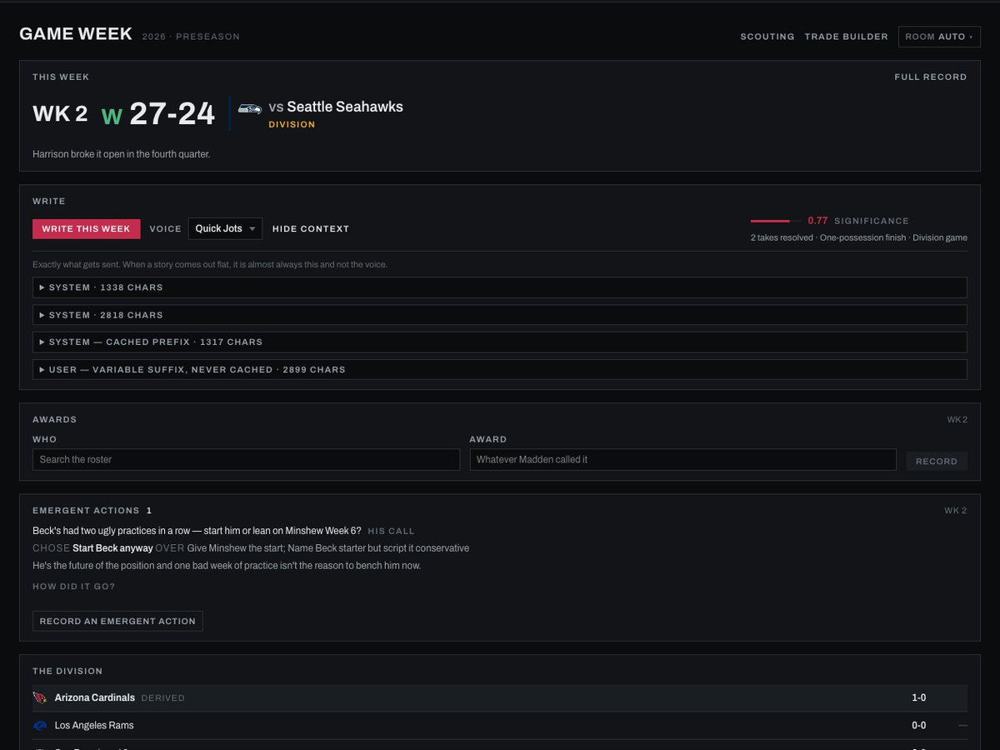
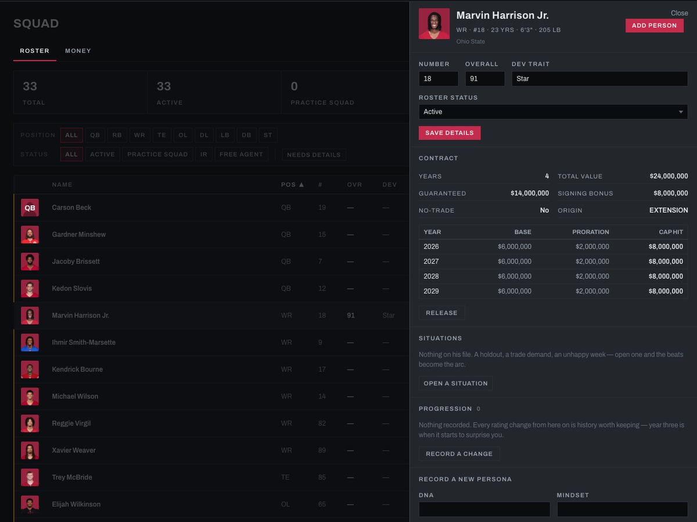
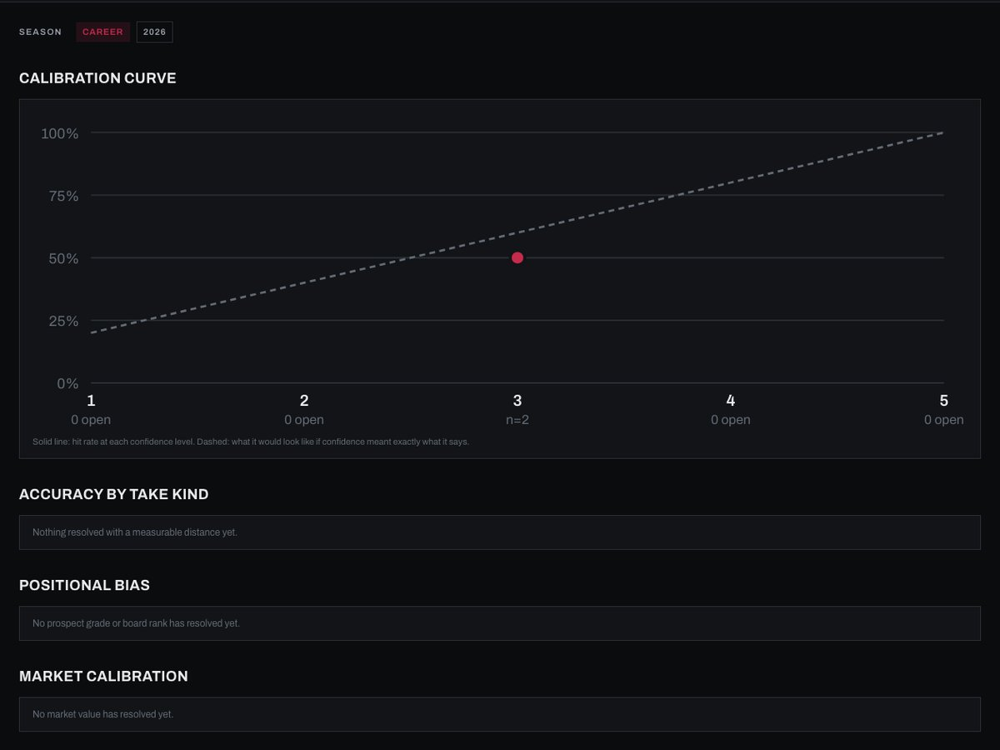
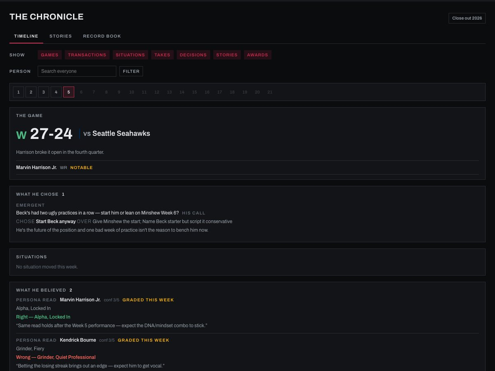

Analytics is infrastructure, not a department.
The same instincts that catch a bad number in a spreadsheet catch value in a trade. Teams are hiring for that directly now, not just for people who grew up around the sport.
I'm working on a Master of Science in Business Analytics at Wake Forest, concentrating in Sports Analytics. Before that, a couple of internships had me building the pipelines behind other people's dashboards, turning messy finance and inventory data into something teams could actually work off of. Now I'm pointing that same mix of analysis and engineering at sports instead.
A couple of years of internships behind me, now pointed at sports, in the classroom and outside of it.
Data work has mostly been my day job so far: cleaning up messy spreadsheets, building the pipeline nobody wanted to build, watching a dashboard actually change how a team made a call. Sports is where I want to point that next, and Wake Forest's Sports Analytics program is where I'm doing that formally. Outside of class I keep building things nobody assigned me, which is really the same instinct with a new subject.
| What I've built | Where it's headed |
|---|---|
| Pipelines and dashboards people relied on daily | Dashboards & valuation models for sports |
| Data migration & API-driven enrichment | Reconciling wearable & tracking data |
| Automated pipelines replacing manual reporting | Scouting & valuation pipelines that scale |
| Teaching people who aren't analysts to use the dashboards themselves | Making analytics make sense to coaches, not just analysts |
Who I am, why sports analytics, and where I'm headed.
What I keep in mind about the industry I'm building toward.
The same instincts that catch a bad number in a spreadsheet catch value in a trade. Teams are hiring for that directly now, not just for people who grew up around the sport.
Every stat you've heard of, strokes gained, EPA, whatever comes next, only works because someone did the unglamorous work of building a clean pipeline underneath it first. That's the part I already know how to do.
Coaches and scouts didn't get into sports to read regression output. Making a number mean something to someone who isn't an analyst is half the job, maybe more of it than the modeling itself.
Solo builds and one class project. What each one is, what I did, what it proves.
Letterboxd, for golf courses.
A local-first web app for discovering golf courses and logging rounds: a satellite map, hole-by-hole scorecards, a five-ball rating system, and a real USGA handicap engine, wrapped up Spotify-style at year end.
Context: I wanted a clean way to track rounds and courses, the way film and album trackers already do for movies and music. Role: sole architect, backend, and frontend, from the geospatial data pipeline to the handicap engine to the UI.
Proof — running locally, screenshots below
A physics-first Wii Golf, built from the ground up.
A from-scratch golf simulator: Wii Golf-style controls over a real physics engine. Wind drifts hole to hole and locks in the instant you swing. Strike point and spin shape the flight. Greens have real slope, and a putt and an approach shot roll across them the same way.
Context: two things I know well, competitive golf and simulation logic. Role: solo developer. Swing and flight physics, course geometry for Augusta National, St Andrews, Pinehurst No. 2 and four more, the CPU opponent, and full handicap scoring on top.
Play it
Give it a go on hole 12 at Augusta, Golden Bell, yourself.
Click into the frame to start. Needs a keyboard, best on a laptop or desktop. Open full-size ↗
It's not what happened. It's what the front office believed.
A companion app for a solo, offline Madden NFL 27 franchise. It records what the in-game news ticker can't: what the front office believed, and what it chose. Every scouting grade and trade call becomes a timestamped "take," graded later against what actually happened.
Context: Madden tells you what happened. I wanted to know if my own front-office calls were any good. Role: sole architect. The event, take, and decision data model, a single-write engine layer, a real NFL roster import, and AI narrative writing that reads the takes and decisions, not just the box score.
The AI piece isn't a chatbot bolted onto the app, it's a small, deliberate pipeline. A handful of writable "voices," plain markdown files, not code, set the tone; everything around them is built to be cheap, controllable, and honest about what it doesn't know.
Proof — one save file, early in its first season. Screens below are from that save: a real roster, a division win, and the takes and decisions logged around it.

The significance score and assembled prompt, computed for free before any API call
Roster and contract as one surface
The Ledger, grading a belief against what actually happened
The Chronicle: one week, with what he chose and what he believed graded next to itLeague beats box score.
A statistics class project with two teammates: real Transfermarkt data on professional players across 20 leagues, built up over the semester into a regression model of market value.
Context: a course project, not a solo build. Role: cleaned the dataset early on, then worked with the team through the descriptive stats, hypothesis testing, and the final regression model.
Proof — pulled straight from the workbook